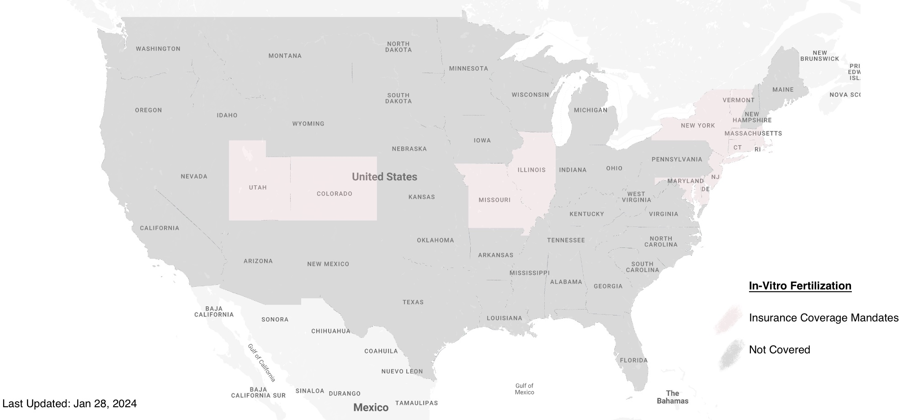

0.6.6 - ci-build
USInterstateInteroperability - Local Development build (v0.6.6) built by the FHIR (HL7® FHIR® Standard) Build Tools. See the Directory of published versions
In-Vitro Fertilization (IVF), a pivotal technique in assisted reproductive technology, varies significantly in accessibility and regulation across different states in the United States. States like Massachusetts, New York, New Jersey, Illinois, Oregon, Washington, California, Delaware, New Hampshire, Maryland, Minnesota, Colorado, and New Mexico each offer distinct IVF landscapes, influenced by local policies and medical infrastructure. Oregon, Colorado, and New Mexico stand out as leading states in IVF services, offering liberal approaches to reproductive health. Notably, Oregon also allows for 'death with dignity' assisted suicide, influencing its broader stance on medical autonomy. The regulatory environment in states like Arizona, traditionally an IVF hub, is shifting, potentially leading to a migration of IVF providers to more permissive states like New Mexico. Meanwhile, states like Delaware and New Hampshire, though not renowned for robust IVF options, provide safe and reliable environments. This state-by-state variation highlights the diverse legal and ethical frameworks governing reproductive technologies, significantly impacting the choices and experiences of individuals seeking IVF treatments.

{
"resourceType": "Consent",
"policy": [{
"authority": "https://www.colorado.gov/"
}],
"provision": {
"type": "permit",
"purpose": [{
"code": "COC",
"display": "coordination of care",
"system": "http://terminology.hl7.org/CodeSystem/v3-ActReason"
}],
"provision": [{
"type": "permit",
"class": [{
"code": "Coverage",
"display": "Coverage",
"system": "http://hl7.org/fhir/resource-types"
}],
"code": [{
"text": "In-vitro fertilizaiton",
"coding": [{
"code": "52637005",
"display": "Test tube ovum fertilization (procedure)",
"system": " http://snomed.info/sct"
}]
}]
}]
}
}